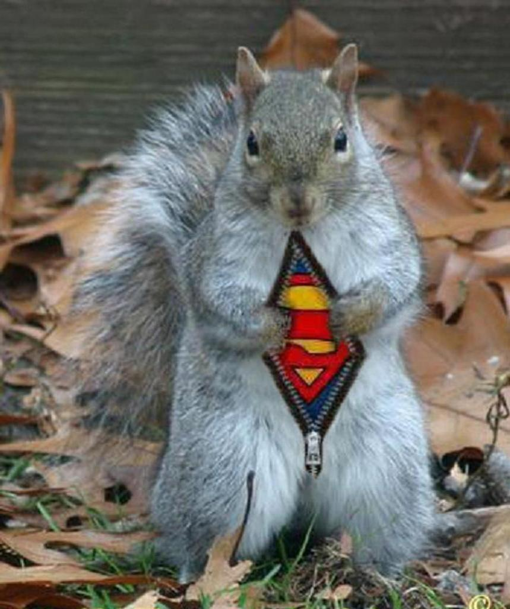

 Squirrels belong to family Sciuridae of small or medium-size rodents. The family includes tree squirrels, ground squirrels, chipmunks, marmots (including woodchucks), flying squirrels, and prairie dogs. Squirrels are indigenous to the Americas, Eurasia, and Africa, and have been introduced to Australia. The earliest known squirrels date from the Eocene and are most closely related to the mountain beaver and to the dormouse among living rodent families.
The word "squirrel", first specified in 1327, comes from Anglo-Norman esquirel from the Old French escurel, the reflex of a Latin word sciurus. This Latin word was borrowed from the Ancient Greek word σκίουρος, skiouros, which means shadow-tailed, referring to the bushy appendage possessed by many of its members.
The native Old English word, ācweorna, survived only into Middle English (as aquerne) before being replaced. The Old English word is of Common Germanic origin, with cognates such as German Eichhorn, Norwegian ikorn/ekorn, Dutch eekhoorn, Swedish ekorre and Danish egern.
Squirrels cannot digest cellulose, so they must rely on foods rich in protein, carbohydrates, and fats. In temperate regions, early spring is the hardest time of year for squirrels, because buried nuts begin to sprout and are no longer available for the squirrel to eat, and new food sources have not become available yet. During these times, squirrels rely heavily on the buds of trees. Squirrels' diets consist primarily of a wide variety of plants, including nuts, seeds, conifer cones, fruits, fungi, and green vegetation. However, some squirrels also consume meat, especially when faced with hunger. Squirrels have been known to eat insects, eggs, small birds, young snakes, and smaller rodents. Indeed, some tropical species have shifted almost entirely to a diet of insects. Predatory behavior has been noted by various species of ground squirrels, in particular the thirteen-lined ground squirrel.For example, Bailey, a scientist in the 1920s, observed a thirteen-lined ground squirrel preying upon a young chicken. Wistrand reported seeing this same species eating a freshly killed snake. Whitaker examined the stomachs of 139 thirteen-lined ground squirrels and found bird flesh in four of the specimens and the remains of a short-tailed shrew in one; Bradley, examining white-tailed antelope squirrels' stomachs, found at least 10% of his 609 specimens' stomachs contained some type of vertebrate, mostly lizards and rodents. Morgart observed a white-tailed antelope squirrel capturing and eating a silky pocket mouse.
| A squirrels day* | |
|---|---|
| 12am-3am | They are sleeping in there nests away from the world |
| 3am-6am | Still sleeping like babies |
| 6am-9am | wake and starting to look for food |
| 9am-12pm | Ate food now looking for freinds to play with |
| 12pm-3pm | Playing with there squirrel freinds doing squirrel things |
| 3pm-6pm | Playing with freinds is tiring so its time to stop playing and look for food. |
| 6pm-9pm | Getting ready for sleep |
| 9pm-12am | Asleep and relaxed |
| **These daily activities is just a squirrel freind observation | |